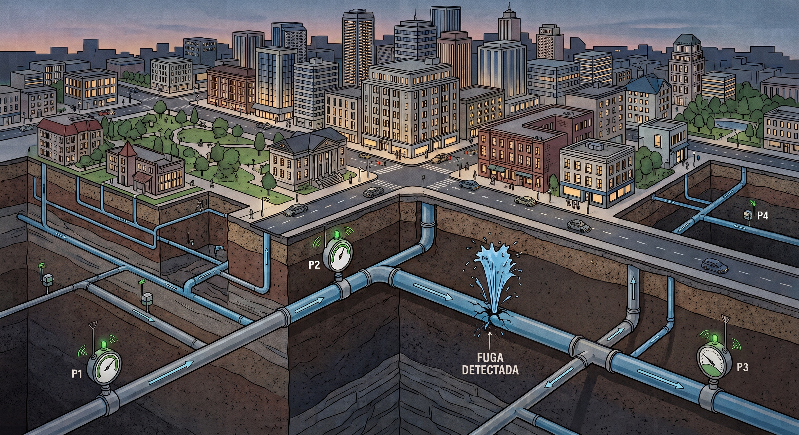

Artículo de divulgación
¿Dónde ponemos el sensor?
Mejorando la localización de fugas de agua con la teoría de la información
Conoce cómo un algoritmo puede revolucionar la forma en que ubicamos sensores para detectar fugas y salvar millones de litros de agua en nuestras ciudades.
El problema de las fugas y cómo localizarlas
El agua es uno de los recursos más valiosos del planeta, y sin embargo, perdemos millones de litros diariamente debido a fugas invisibles bajo nuestras calles. Las redes de distribución de agua (WDN, por sus siglas en inglés) son infraestructuras críticas y complejas. Encontrar una fuga en un complejo entramado de tuberías subterráneas es como buscar una aguja en un pajar.

Para abordar este problema, las empresas de agua instalan sensores a lo largo de la red. Pero aquí surge un obstáculo financiero y logístico: las redes tienen cientos o miles de nodos, y es imposible (y extremadamente costoso) colocar un sensor en cada esquina. Entonces, si solo tenemos presupuesto para instalar unos pocos sensores, ¿cuál es el lugar óptimo para colocarlos?
La información está en la presión
Históricamente, los ingenieros se han apoyado en sensores de flujo y de presión ubicados en puntos críticos, como los tanques de suministro. No obstante, esto no es suficiente para localizar con exactitud dónde se ha roto una tubería. Un equipo de investigadores (Santos-Ruiz et al., 2022) propuso una solución novedosa y pragmática: basarse principalmente en sensores de presión.
¿Por qué la presión? Son equipos mucho más baratos, más fáciles de instalar y de mantener que los sensores de flujo. Pero, más importante aún, las presiones en los nodos de una red son extremadamente sensibles a las alteraciones provocadas por una fuga en el sistema. Una pequeña rotura genera una “huella” o “firma” como una variación de presión que se propaga por la red.
Información mutua, relevancia y redundancia
Decidir en qué nodos específicos colocar estos sensores es un problema matemático titánico. En una red de tamaño mediano con 500 nodos, si queremos colocar solo 10 sensores, existen aproximadamente 2.5 × 1020 combinaciones posibles. Intentar calcular todas las opciones llevaría una eternidad. Hasta ahora, la ciencia recurría a algoritmos genéticos o heurísticas que requerían mucho tiempo de computación (horas o días) y que dependían directamente del método de localización de fugas que se usara después.
"En lugar de evaluar todas las combinaciones posibles, el nuevo enfoque selecciona los nodos que aportan la información más útil, descartando aquellos que solo repiten lo que ya sabemos."
El innovador estudio publicado en la revista Sensors aborda este desafío desde una perspectiva completamente distinta: la teoría de la información de Shannon. Imagine que cada sensor es un periodista reportando una noticia (la fuga). Si colocamos a dos periodistas en la misma calle, ambos nos contarán exactamente la misma historia y habremos desperdiciado un recurso.
El algoritmo propuesto evalúa dos métricas fundamentales, que luego se combinan en un único valor denominado índice de relevancia/redundancia (RRI):
- Con la relevancia, $\mathrm{Rel}(x)$, se busca maximizar la cantidad de información útil que un sensor puede aportar sobre el nodo específico donde ocurre la fuga. Matemáticamente, esto se evalúa midiendo la información mutua entre la presión del nodo y la posición de la fuga.
- Con la redundancia, $\mathrm{Red}(x)$, se busca minimizar la información traslapada. Esto asegura que cada nuevo sensor añadido a la red reporte información que los demás sensores no están captando (evaluando la información mutua entre sensores).
La esencia de la optimización en este algoritmo radica en maximizar el siguiente cociente iterativamente para elegir cada nuevo nodo:
El objetivo es encontrar el nodo $x$ que ofrezca la máxima relevancia respecto a la fuga ($y$) y la mínima redundancia acumulada con el conjunto de sensores ya seleccionados ($S$).
Un algoritmo que vence al tiempo
Para lograr esto, los investigadores generaron un conjunto de datos masivo simulando múltiples escenarios de fugas de diferentes tamaños usando el software EPANET. Con estos datos sintéticos, aplicaron un algoritmo de selección heurística (con costo computacional cuadrático) que clasifica los nodos de mayor a menor importancia usando la ecuación descrita.
Los resultados fueron puestos a prueba en la famosa red de prueba de Hanoi. Mientras que los métodos tradicionales basados en algoritmos genéticos tardaban unos 24 minutos en encontrar la ubicación ideal, el algoritmo basado en la teoría de la información tardó alrededor de un segundo. Además, al probar la eficacia de la ubicación del conjunto sensores para localizar fugas con técnicas de inteligencia artificial (como k-NN y QDA), se confirmó que los nodos seleccionados garantizaban un rendimiento superior para detectar y localizar la fuga con precisión casi perfecta.
El futuro de la gestión del agua
Este avance es de gran utilidad para una gestión eficiente del agua potable. Al desvincular el problema de la ubicación de los sensores del método de detección de fugas, se ofrece una herramienta universal y rápida. Ahora, las ciudades pueden planificar expansiones de su red de monitoreo de forma inteligente, maximizando su inversión y asegurando que cada sensor cuente en la misión vital de preservar nuestra agua.
Referencias
- Santos-Ruiz, I., López-Estrada, F. R., Puig, V., Valencia-Palomo, G., & Hernández, H. R. (2022). Pressure Sensor Placement for Leak Localization in Water Distribution Networks Using Information Theory. Sensors, 22(2), 443. DOI: 10.3390/s22020443